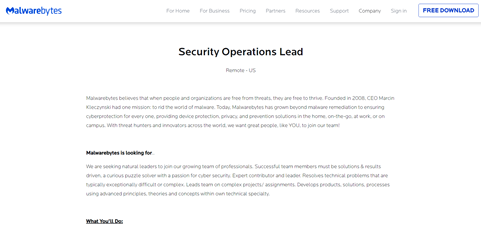
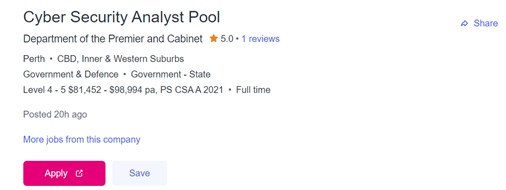
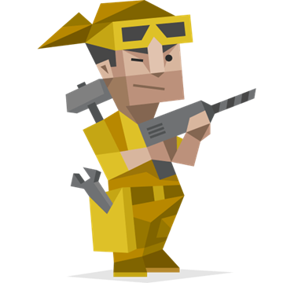
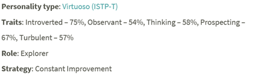
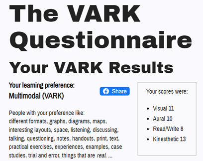
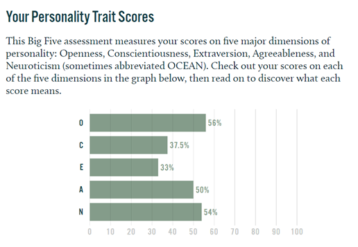

Hi, my name is Ronald (Ron for short) Ray Tran, Student number and email is s3895395@student.rmit.edu.au. I was born in Australia and am Vietnamese but can barely speak it. I am currently undertaking the Bachelor of Information Technology at RMIT due to my previous course being discontinued (Bachelor of Business Information Systems (Applied)). My favourite past time is to read Japanese and Korean fiction.
My interest in IT would be the Cyber Security field and particularly how to ‘get into the system and hack’ and how modern security systems prevent this. Another interest in this field would be how game anti cheat systems work and the constant battle between cheat developers and game developers. My interest in IT started when I first heard about the ESEA bitcoin scam back in 2015 (happened in 2013) and proceeded to research the topic, bitcoin, and bitcoin mining and blockchains.
I chose to come to RMIT to study Information Technology because of the world class education it provides being in the top 250 of the world’s universities and being one of the world’s top 150 universities for computer science and information systems. RMIT is also industry connected which provides opportunities to further develop myself and seek internships while also providing industry relevant education to allow me to specialise and be job ready once I graduate.
I expect to learn from my studies of information technology, an intermediate level of coding with python, SQL, HTML and various other languages. A detailed understanding of data base systems, cloud computing and cyber security. The ability to develop software apps for social media, artificial intelligence, websites and various other projects.
My ideal job would be to work in the cyber security field particularly as cyber security analyst or security operations lead. The job involves preventing, detecting, and responding to cyber threats through various means and working in teams across multiple sectors to educate, evaluate weakness and improve existing IT infrastructure in terms of security. This job appeals to me as it fulfils the fantasy of being a white hat hacker, someone with the ability to exploit or break the system but choses not to. Additionally, the job would also further develop my ability to deal with unpredictable circumstances which would allow me to become a stronger person.
 The job would require at least a bachelor’s degree in a related subject to cybersecurity such as computer science or information technology and or a few certifications such as CompTIA Security+ certificate. The job would require me to have at least a few years of experience of relevant IT experience such as being an ethical hacker, information security analyst, IT support and more. The job would require skills and knowledge of cyber security and overall IT architecture design and tools such as proficient coding knowledge, in-depth knowledge about IT audit processes, Security Incident Response and resolution, Penetration Testing, vulnerability management.Link Security analyst. Link to Security operations.
As I currently have next to no relevant experience or skills related to the job besides basic cyber safety practices such using VPNs, antiviruses such as Malwarebytes premium, HTTPs everywhere extension, adblocks and not pressing or browsing suspicious links and websites. I will need to major in IT security/Cyber security to gain knowledge and skills relevant to the job and acquire few cyber security certificates such as CISSP, CISM to further specialise in the field and gain credibility. Additionally I would gain relevant experience by getting internships and jobs in a field related to cyber security.
Results of Myers-Briggs test, VARK learning styles test and Big 5 personalities test.
   These test results allow me to evaluate myself in a deeper way then beyond a simple personality test, to see more accurately what my strengths and weakness are as an individual. The Myers-Briggs test speaks volume of my character as a problem solver whereas the VARK test resonates with me as learning with multiple modalities allows me to better understand content due to the diverse learning style. Finally the big 5 personality test allows me to further solidify the results from the Myers-Briggs test, highlighting specific traits more clearly.
These results can both negatively and positively affect the team through my behaviour. Due to being introverted, I may not effectively communicate with the team due to being private and reserved which may cause delays in the team’s work efficiency, additionally the test indicate my behaviour maybe stubborn and insensitive which can also ruin team cohesion and work flow. Whereas my behaviour can negatively affect the team, it can also bring about positive influence onto the team. The tests highlight that my behaviour is creative and practical which can lead to better brainstorming for ideas in the team.
Taking into account the behaviour patterns of my character from the tests. When forming a team, the team should consist other creative people to overcome the behaviour pattern of being easily bored while also bolstering the groups brainstorming power. The team should have at least one extraverted member who will get all team members to contribute their ideas and views to negate the behavioural pattern of being quiet and reserved which would additionally boost team cohesion and efficiency. Lasty my interpretation of the tests results may be lacking depth due to the tendency of being easily bored as mentioned in the tests results due to having once learned something, ISTP-Ts will find something more interesting to put their attention to.
The project will develop a fingerprint-based system that will use the fingerprints of customers to log into their accounts and authenticate transactions. The system would replace the need to carry a card as the users finger print would act as the authenticator to the account with the finger print being linked to the users account and stored on the network. Additionally to ensure some level of security, the user would still need to input a pin code to gain full access to the account.
This project will be useful in mitigating credit card fraud and theft which costed the Australian government 490 million dollars from 2020 to 2021 as it will phase out credit cards. Due to everyone have their own unique fingerprint which is attached to them at all times unless the individual has no fingerprints, no one would be able to access the user’s account besides the individual themselves as it would be very difficult to steal or fake the biometric. Additionally using a fingerprint instead of a card would save time for the users as they would only need to have their finger scanned instead of fiddling around with their purse or wallet, putting their card and then finally taking it back out which they could forget and leave behind.
The system would have to rework the chip reader in ATMs into a Finger print scanner which would communicate with the existing banking system. The system would work by linking the client’s account with their fingerprint which would act as the chip in credit cards. The data of the fingerprint would then need to be converted into a readable language and stored onto a database where the client’s fingerprint would be registered onto the system where once the user uses the ATM’s finger print reader, the print scanned at the ATM would be matched with the existing fingerprint stored on the system. Then the user would be prompted to enter their pin code for extra security before finally being able to access their account.
The software needed would be a comprehensive database to not only store the finger prints on the system but to also link the fingerprints with the bank accounts of the users which ATMs can retrieve the data and make changes to. The hardware needed would be a biometric scanner to read the finger prints of clients and a computer to send, retrieve and edit data from the banking network.
The software skills needed would be comprehensive SQL language skills to build the database that would hold the data of fingerprints which would be linked with the existing banking network. Additionally, the project would need someone skilled in building a biometric system to scan be able to scan the fingerprint. The data of the fingerprint would then need to be converted into a readable language and stored into the SQL format. It would be quite feasible to build this system by hiring professionals in SQL, Banking systems and engineers to write up the code and build the biometric system.
If the project is successful, usage of ATMs would be more seamless and faster as well as more secure as someone cannot easily replicate or steal your fingerprint. ATMs would replace the card reading system or add the biometric system which would result in lower usage of credit cards thus lowering demand for new credit cards which would result in less plastic being produced benefiting the environment. Additionally once credit cards are phased out, credit fraud and theft would become non existent.